| Year | Observation | |
|---|---|---|
| 0 | 2015 | 123 |
| 1 | 2016 | 39 |
| 2 | 2017 | 78 |
| 3 | 2018 | 52 |
| 4 | 2019 | 110 |
Data Analytics & Visualization
Time Series Graphics for Data Analytics
Victor Henriques, Ph.D.
Learning objectives
By the end of the lesson, students will be able to:
- represent timestamps, periods, frequency, and series identifiers;
- construct and interpret time plots;
- distinguish trend, seasonality, cycles, and irregular variation;
- use seasonal and seasonal-subseries plots;
- explore relationships with scatterplots and scatterplot matrices;
- create and interpret lag plots;
- avoid common visual and temporal reasoning errors.
Why plotting comes first
Which visualizations reveal the temporal structures?
Time order → pattern → seasonality → relationships → dependence → diagnostic judgment
A time-series graph can reveal:
- changes in level or direction;
- repeating calendar patterns;
- changing variance;
- unusual observations or gaps;
- relationships with exogenous variables;
- persistence and lag structure;
- possible data-quality or timestamp problems.
Data and Time Structure
A time series in a DataFrame
A DataFrame has two labeled axes: an index for rows and columns for variables.
Index, columns, and data types
RangeIndex(start=0, stop=5, step=1)
Index(['Year', 'Observation'], dtype='object')
Year int64
Observation int64
dtype: object
<class 'pandas.core.series.Series'>Timestamps and periods
Timestamp('2020-01-01 00:00:00')
Period('2020-01', 'M')Timestamp: a specific instant.Period: a span of time with a frequency.
Timestamp attributes
timestamps = pd.date_range("2020-01-01", periods=3, freq="D")
ts_frame = pd.DataFrame(index=timestamps)
ts_frame["date"] = ts_frame.index.date
ts_frame["year"] = ts_frame.index.year
ts_frame["label"] = ts_frame.index.strftime("%A, %B %-d")
ts_frame| date | year | label | |
|---|---|---|---|
| 2020-01-01 | 2020-01-01 | 2020 | Wednesday, January 1 |
| 2020-01-02 | 2020-01-02 | 2020 | Thursday, January 2 |
| 2020-01-03 | 2020-01-03 | 2020 | Friday, January 3 |
Key variables identify separate series
| Year | Length | Sex | Time | |
|---|---|---|---|---|
| 0 | 1896 | 100 | men | 12.0 |
| 1 | 1900 | 100 | men | 11.0 |
| 2 | 1904 | 100 | men | 11.0 |
key_columns = ["Length", "Sex"]
olympic_running.groupby(key_columns).size().rename("observations").head(3)Length Sex
100 men 31
women 23
200 men 30
Name: observations, dtype: int64A valid multi-series table needs a unique combination of identifying keys and time.
Wide and long representations
wide_demo = olympic_running.pivot_table(
index="Year", columns=["Length", "Sex"], values="Time"
)
wide_demo.head()| Length | 100 | 200 | 400 | ... | 1500 | 5000 | 10000 | ||||||
|---|---|---|---|---|---|---|---|---|---|---|---|---|---|
| Sex | men | women | men | women | men | women | ... | men | women | men | women | men | women |
| Year | |||||||||||||
| 1896 | 12.0 | NaN | NaN | NaN | 54.2 | NaN | ... | 273.2 | NaN | NaN | NaN | NaN | NaN |
| 1900 | 11.0 | NaN | 22.2 | NaN | 49.4 | NaN | ... | 246.2 | NaN | NaN | NaN | NaN | NaN |
| 1904 | 11.0 | NaN | 21.6 | NaN | 49.2 | NaN | ... | 245.4 | NaN | NaN | NaN | NaN | NaN |
| 1908 | 10.8 | NaN | 22.6 | NaN | 50.0 | NaN | ... | 243.4 | NaN | NaN | NaN | NaN | NaN |
| 1912 | 10.8 | NaN | 21.7 | NaN | 48.2 | NaN | ... | 236.8 | NaN | 876.6 | NaN | 1880.8 | NaN |
5 rows × 14 columns
Long form is convenient for grouped operations and semantic mappings; wide form is useful for matrices and some comparisons.
Working with time series dataframes
pbs = (
pd.read_csv(DATA_PATH / "PBS_unparsed.csv", parse_dates=["Month"])
[["Month", "Concession", "Type", "ATC1", "ATC2", "Scripts", "Cost"]]
)
pbs.head()| Month | Concession | Type | ATC1 | ATC2 | Scripts | Cost | |
|---|---|---|---|---|---|---|---|
| 0 | 1991-07-01 | Concessional | Co-payments | A | A01 | 18228 | 67877.0 |
| 1 | 1991-08-01 | Concessional | Co-payments | A | A01 | 15327 | 57011.0 |
| 2 | 1991-09-01 | Concessional | Co-payments | A | A01 | 14775 | 55020.0 |
| 3 | 1991-10-01 | Concessional | Co-payments | A | A01 | 15380 | 57222.0 |
| 4 | 1991-11-01 | Concessional | Co-payments | A | A01 | 14371 | 52120.0 |
Filter and aggregate one monthly series
total_cost_df = pd.read_csv(DATA_PATH / "total_cost_df.csv")
a10 = pbs.loc[pbs["ATC2"] == "A10"]
total_cost_df = (
a10.groupby("Month", as_index=False)
.agg(Cost=("Cost", "sum"))
.assign(Cost=lambda x: x["Cost"] / 1e6)
)
total_cost_df.head()| Month | Cost | |
|---|---|---|
| 0 | 1991-07-01 | 3.526591 |
| 1 | 1991-08-01 | 3.180891 |
| 2 | 1991-09-01 | 3.252221 |
| 3 | 1991-10-01 | 3.611003 |
| 4 | 1991-11-01 | 3.565869 |
Seasonal period
| Interval | Hour | Day | Week | Year |
|---|---|---|---|---|
| Quarter | 4 | |||
| Month | 12 | |||
| Week | 52 | |||
| Day | 7 | 365.25 | ||
| Hour | 24 | 168 | 8766 | |
| Minute | 60 | 1440 | 10080 | 525960 |
A series may contain more than one seasonal pattern.
Time plots
Time-plot reading protocol
Look for:
- level and long-run direction;
- fixed-period repetition;
- changes in variability;
- unusual observations and gaps;
- structural breaks or interventions;
- whether the visible patterns are stable.
Ansett Airlines
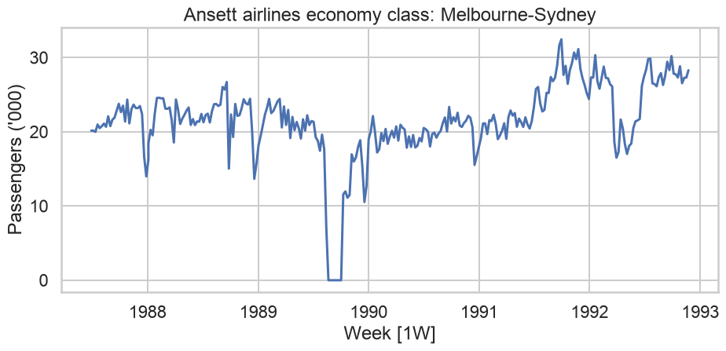
Antidiabetic drug sales
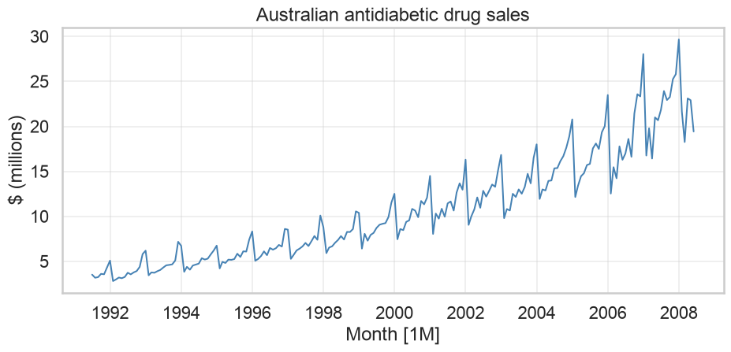
Time series patterns
Trend, seasonal, and cyclic behavior
- Trend: long-term increase or decrease; it need not be linear.
- Seasonal: repetition with a fixed, known, calendar-related period.
- Cyclic: rises and falls without a fixed frequency.
Four contrasting patterns
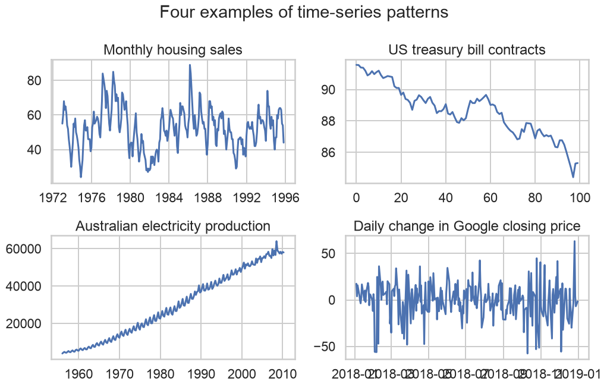
Seasonal plots
Monthly seasonal plot
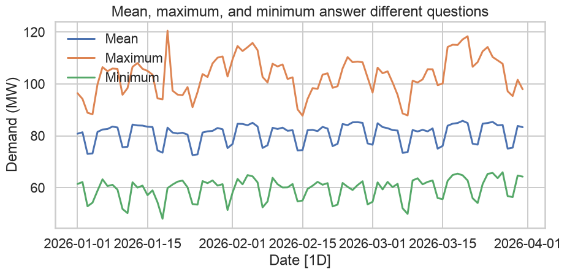
Multiple seasonal periods
vic_elec_df = pd.read_csv(DATA_PATH / "vic_elec.csv", parse_dates=["ds"])
vic_elec_demand = vic_elec_df.loc[vic_elec_df["unique_id"] == "Demand"].copy()
vic_elec_demand.tail()| ds | unique_id | y | Holiday | |
|---|---|---|---|---|
| 52597 | 2014-12-31 21:30:00 | Demand | 3873.448714 | False |
| 52598 | 2014-12-31 22:00:00 | Demand | 3791.637322 | False |
| 52599 | 2014-12-31 22:30:00 | Demand | 3724.835666 | False |
| 52600 | 2014-12-31 23:00:00 | Demand | 3761.886854 | False |
| 52601 | 2014-12-31 23:30:00 | Demand | 3809.414586 | False |
Half-hourly demand can show daily, weekly, and annual patterns.
Daily seasonal pattern

Weekly seasonal pattern
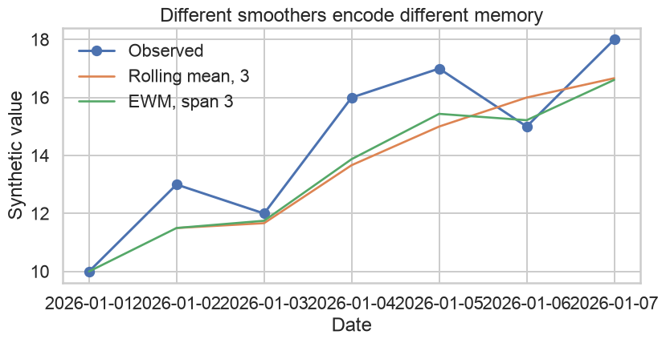
Annual seasonal pattern
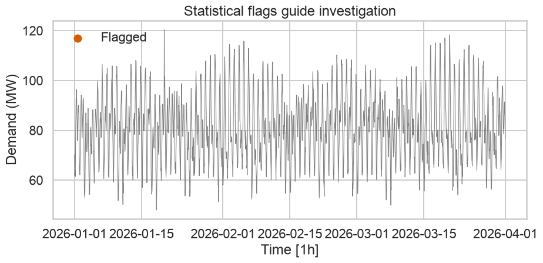
Seasonal subseries plots
Monthly subseries
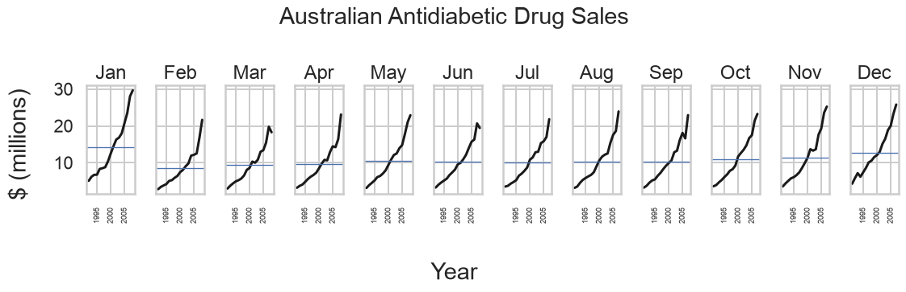
Australian holiday tourism
tourism = pd.read_csv(DATA_PATH / "tourism.csv", parse_dates=["ds"])
trips = (
tourism.loc[lambda x: x["Purpose"] == "Holiday"]
.groupby(["State", "ds"], as_index=False)
.agg(y=("y", "sum"))
)
trips.head()| State | ds | y | |
|---|---|---|---|
| 0 | ACT | 1998-01-01 | 196.218550 |
| 1 | ACT | 1998-04-01 | 126.770597 |
| 2 | ACT | 1998-07-01 | 110.679645 |
| 3 | ACT | 1998-10-01 | 170.472206 |
| 4 | ACT | 1999-01-01 | 107.779245 |
Holiday time plots by state
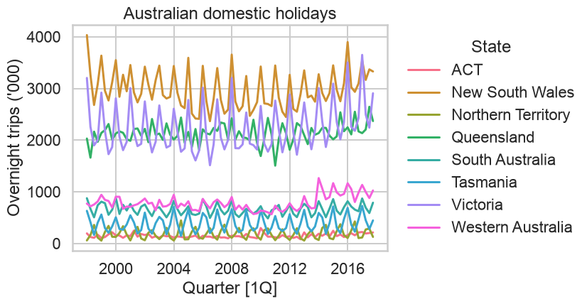
Seasonal plots by state
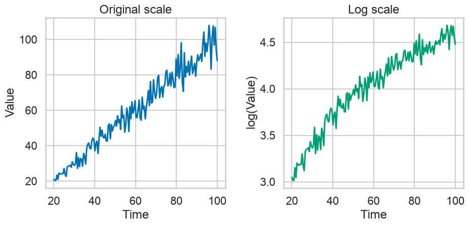
Holiday subseries by state
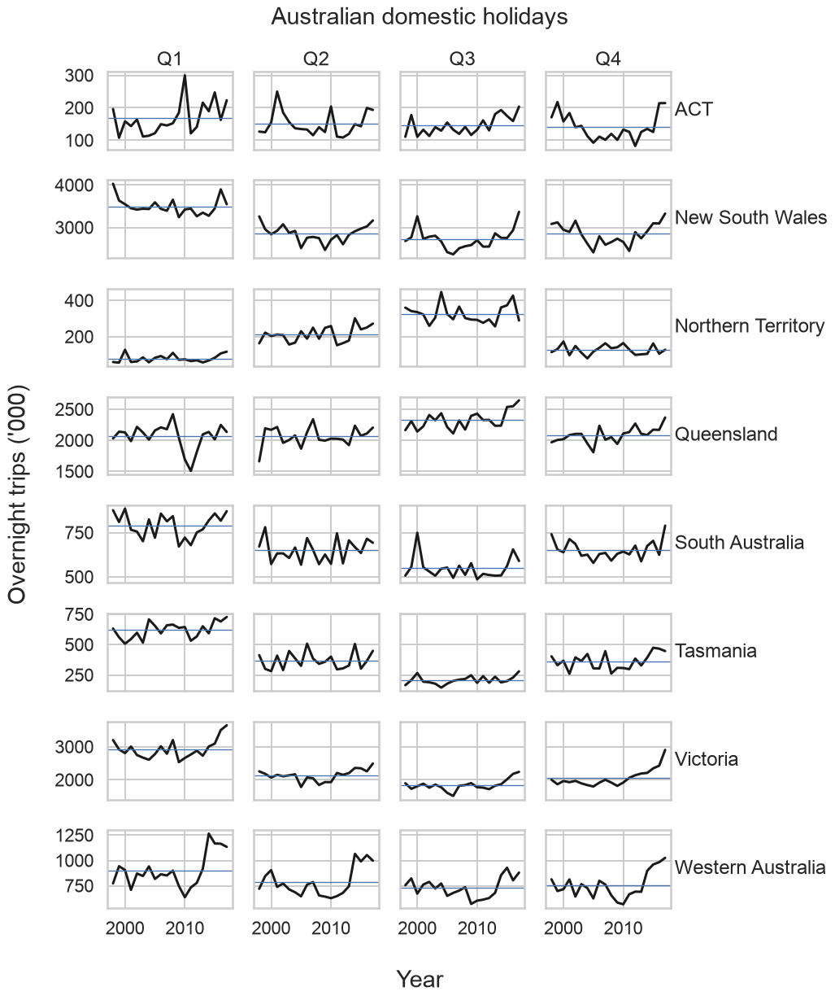
Scatterplots
Electricity demand

Temperature
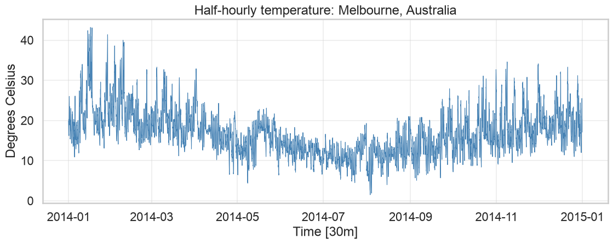
Demand versus temperature
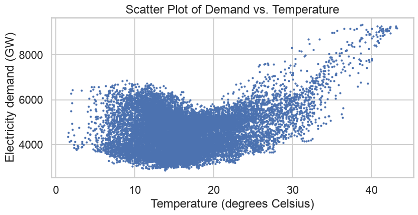
Correlation measures linear association
\[ r = \frac{\sum_t (x_t-\bar{x})(y_t-\bar{y})} {\sqrt{\sum_t(x_t-\bar{x})^2}\sqrt{\sum_t(y_t-\bar{y})^2}} \]
rlies between -1 and 1;- sign indicates direction;
- magnitude describes linear association;
- nonlinear structure can be strong even when
ris modest.
Different correlations
correlations = [-0.9, -0.5, 0, 0.5, 0.9]
fig, axes = plt.subplots(1, 5, figsize=(13, 3), sharex=True, sharey=True)
rng = np.random.default_rng(42)
for ax, rho in zip(axes, correlations):
values = rng.multivariate_normal([0, 0], [[1, rho], [rho, 1]], size=120)
ax.scatter(values[:, 0], values[:, 1], s=10, alpha=.55)
ax.set_title(f"r ≈ {np.corrcoef(values.T)[0,1]:.2f}")
plt.tight_layout()
plt.show()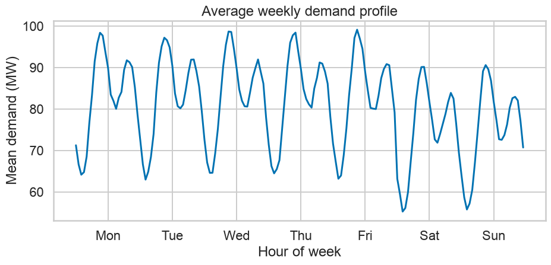
Tourism relationships
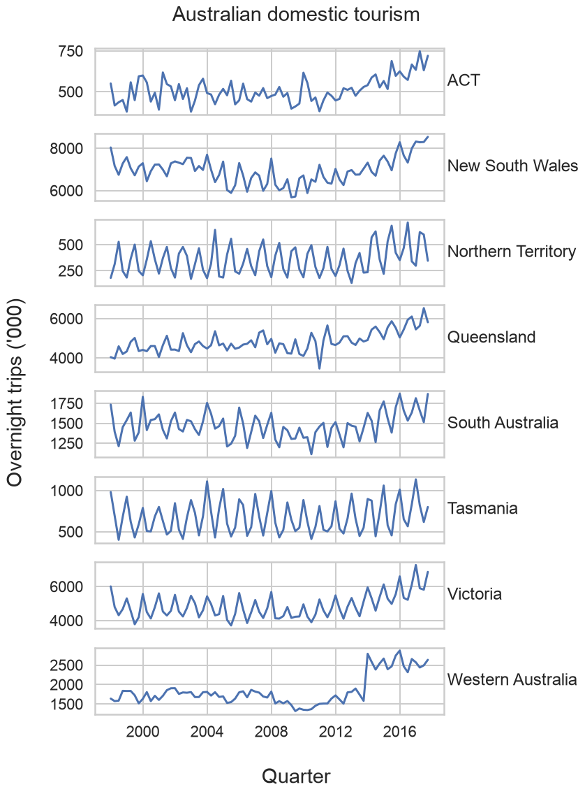
Scatterplot matrix
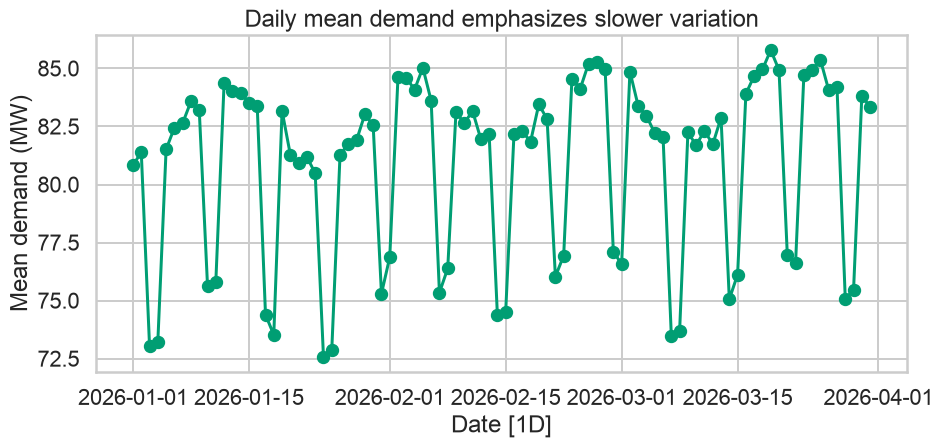
Lag plots
Quarterly beer production
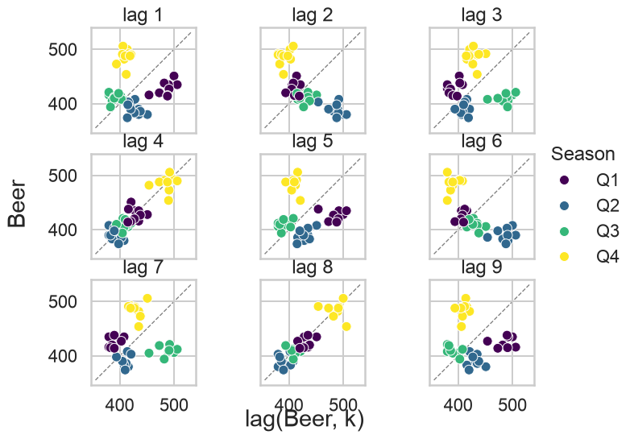
Autocorrelation
Definition
\[ r_k = \frac{\sum_{t=k+1}^{T}(y_t-\bar{y})(y_{t-k}-\bar{y})} {\sum_{t=1}^{T}(y_t-\bar{y})^2} \]
Autocorrelation measures linear association between a series and its lagged values. The collection of coefficients is the ACF.
Beer autocorrelation coefficients
| ACF | |
|---|---|
| lag | |
| 1 | -0.052981 |
| 2 | -0.758175 |
| 3 | -0.026234 |
| 4 | 0.802205 |
| 5 | -0.077471 |
Beer autocorrelation function

Trend and seasonality in ACF plots
- trend often produces large positive autocorrelations that decay slowly;
- seasonality produces peaks at seasonal lags;
- trend plus seasonality combines slow decay with repeated seasonal structure.

Key takeaways
Visual diagnostic sequence
- validate time, identifiers, and frequency;
- begin with a time plot;
- identify trend, seasonality, and cycles;
- reorganize time with seasonal and subseries plots;
- inspect relationships with scatterplots;
- inspect serial dependence with lag plots and ACF;
- compare residual-looking behavior with white noise;
- convert visual findings into forecasting requirements.
Exercises
Core exercises
- Explore the following four time series:
Bricksfromaus_production,Lynxfrompelt,GOOG_Closefromgafa_stock,Demandfromvic_elec.
- Use
.info()to find out about the data in each series. - What is the time interval of each series?
- Produce a time plot of each series.
Use
.loc[]orquery()to find what days corresponded to the peak closing price for each of the four stocks ingafa_stock.Download the file
tute1.csv, open it in Excel (or some other spreadsheet application), and review its contents. You should find four columns of information. Columns B through D each contain a quarterly series, labelled Sales, AdBudget and GDP. Sales contains the quarterly sales for a small company over the period 1981–2005. AdBudget is the advertising budget and GDP is the gross domestic product. All series have been adjusted for inflation.
- You can read the data into Python with the following script:
- Construct time series plots of each of the three series
- The us_total.csv contains data on the demand for natural gas in the US.
Download us_total.csv from the book website read in the csv file using pd.read_csv().
Create a dataframe from us_total with year as the index.
Plot the annual natural gas consumption by state for the New England area (comprising the states of Maine, Vermont, New Hampshire, Massachusetts, Connecticut and Rhode Island).
- Download tourism.xlsx and read in it using pd.read_excel().
Create a dataframe using tourism.xlsx.
Find what combination of Region and Purpose had the maximum number of overnight trips on average.
Create a new dataframe which combines the Purposes and Regions, and just has total trips by State.
- The aus_arrivals data set comprises quarterly international arrivals to Australia from Japan, New Zealand, UK and the US.
Use plot_series() to visualise the data.
Use seaborn or matplotlib to create seasonal and subseries plots to compare the differences between the arrivals from these four countries and identify any unusual observations.
- Monthly Australian retail data is provided in aus_retail. Select one of the time series as follows (but choose your own seed value):
random = np.random.RandomState(12345678)
random_series_id = random.choice(aus_retail["Series ID"].unique())
myseries = aus_retail.loc[aus_retail["Series ID"] == random_series_id]- Explore your chosen retail time series using the following functions:
- Can you spot any seasonality, cyclicity and trend? What do you learn about the series?
- Use the following graphics functions:
plot_series(),seasonal_decompose(),lag_plot(),plot_acf()and explore features from the following time series: “Total Private”Employedfromus_employment,Bricksfromaus_production,Harefrompelt, “H02”CostfromPBS, andBarrelsfromus_gasoline.
- Can you spot any seasonality, cyclicity and trend?
- What do you learn about the series?
- What can you say about the seasonal patterns?
- Can you identify any unusual years?
- The aus_livestock data contains the monthly total number of pigs slaughtered in Victoria, Australia, from Jul 1972 to Dec 2018. Use
.loc[]to extract pig slaughters in Victoria between 1990 and 1995. Useplot_series()andplot_acf()for this data. If a longer period of data is used, what difference does it make to the ACF?
References
- McKinney, W. Python for Data Analysis, 3rd ed., Chapters 12.
- Hyndman, R. J., Athanasopoulos, G., Garza, A., Challu, C., & Mergenthaler, M. Forecasting: Principles and Practice, the Pythonic Way, Chapter 2: Time series graphics.
- Chapter 12: Time series
- Chapter 2: Time series graphics
- pandas documentation
- Matplotlib documentation
- seaborn documentation
- statsmodels documentation
Attribution: concepts were adapted and rewritten from the cited references. Synthetic data, exercises, validation rules, and teaching narrative were created for this module.
Data Analytics & Visualization